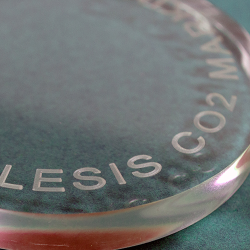
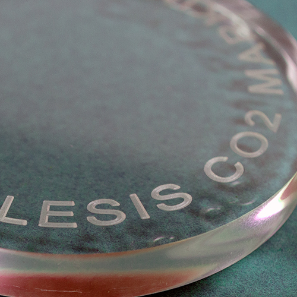

Powerful and Efficient CO2 Laser Marker
Traceability is crucial in the manufacturing industry, ensuring that all products are comprehensively monitored across every stage of the supply chain, from manufacturing to distribution to the moment they reach the end consumer. CO2 laser marking machines play a significant role in this process. They print unique identifiers like serial numbers, bar codes and QR codes on products that manufacturers can use to glean valuable track and trace information. At Telesis Technologies, Inc., we develop innovative and efficient CO2 laser engraving machines that set the standard for quality and durability. We engineer our permanent marking systems with high-quality materials that stand the test of time.

- Material marking versatility: Our CO2 lasers are great for marking organic materials like wood, rubber, paper and ceramic.
- Installation flexibility: These CO2 laser marking systems are equally capable of stationary bench-top use and mark-on-the-fly installations.
- Powerful operation: CO2 lasers are powerful and efficient, making them an excellent choice for heavy industrial and high-duty cycle applications.
- High-speed marking: CO2 laser engravers have faster marking speeds than other machines, producing more products in less time.
- Cost-efficiency: You can purchase CO2 laser marking machines at a lower price than other permanent marking technologies.
Models
- CO2 10: This machine model operates at 10 watts.
- CO2 30: The CO2 30 delivers 30-watt operation.
Technology Options
- iZONIT™ Vision System
- Mark-on-the-Fly Technology
 

You can streamline your production with an integrated fiber laser marking machine. Whatever you need to mark, our fiber lasers have the speed, precision and efficiency to give you the results you need.
Our fiber laser marking systems are at work in various industries, including:
CO2 Laser Engraving Applications
When you purchase a CO2 marking machine for your business, you can mark a wide range of materials with optimal precision and efficiency. CO2 lasers can engrave many surfaces, including these nonmetallic materials:
- Wood
- Plastic
- Glass
- Cardboard
- Rubber
- Paper
- Leather
- Acrylic
- Fabric
- Cork
Our CO2 Laser Marking Software
When you invest in one of our reliable CO2 laser markers, you can pair it with Merlin®. This proprietary software runs genuine Telesis products, including laser, scribe and dot peen marking systems. This powerful and intuitive software is equipped with all of the following features:
- Simple operator interface
- Limitless marking capabilities
- Continuous in-house maintenance
- Seamless integration
- Industry-specific tools
- Complete control from a single platform
- Operational safety
- Training and support
- Optimal connectivity
Invest in a CO2 Laser Engraving System at Telesis Technologies, Inc.
If you’re looking for a high-quality CO2 laser engraving machine for your business, Telesis Technologies, Inc. is your solution. As your one-stop shop for permanent marking solutions, we’re dedicated to delivering durable products, innovative software and exceptional customer service you can rely on. With our state-of-the-art laser engraving systems, you can implement unique identifiers onto your products easily and efficiently. Contact us to get a quote on a CO2 laser today!